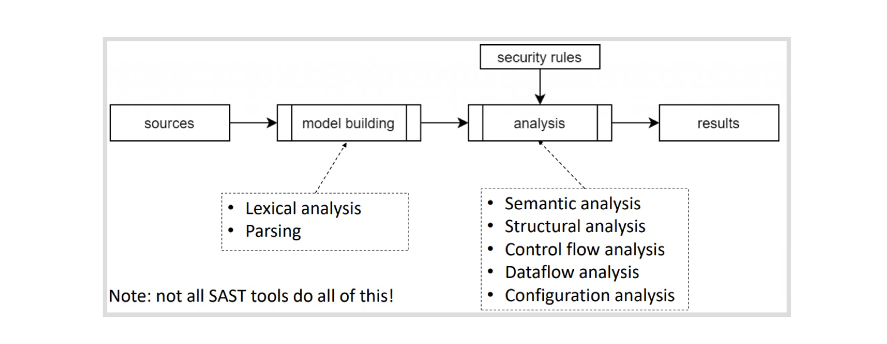

What is SAST?#
Static Application Security Testing (SAST) tools are solutions that scan your application source code or binary and find vulnerabilities.
It is known as White-box testing, and developers can use it within the IDE or integrate it into CI/CD pipelines.
First SAST tools came into the market in 2002* and are part of every modern application development environment. It can help developers in real-time with the potential security issues in the code they are writing.
How do SAST tools work?#
Most of the SAST tools start the process by creating a common format (AST) irrespective of the language of your code. This way it will be easier/faster to query the source code and find security issues.

After creating a model from your source code then SAST tools can start looking for known issues with the rule engine.
It will include language-specific rules, relevant rules and custom rules that users can add to cover business-logic related issues.

In semantic analysis, SAST tools will look for the usage of insecure code and even can detect indirect calls.
Structural analysis will check language-specific secure coding violations and detect improper variables/functions/methods access modifier, dead code, insecure multithreading, and memory leaks.

Control flow analysis validates the order of operations by checking sequence patterns. It can identify the dangerous sequence of actions, resource leaks, race conditions and Improper variable/object initializing before use.

Data flow analysis is the most powerful technique, and It tracks the data flow from the taint source (attacker-controlled inputs) to the vulnerable sink. (exploitable code)
It can identify Injections, buffer overflows, and format-string attacks.

Configuration analysis checks the application's configuration files (XML, Web.config, properties files) and finds known security misconfigurations.

How to integrate SAST tools into DevSecOps?#
Integrating SAST tools into automated DevOps workflows, making it much faster to deliver secure software to your end-users.
It will save a lot of time during vulnerability management / remediation, and your developers will get an immediate response from the SAST Tool with this proactive scanning approach.